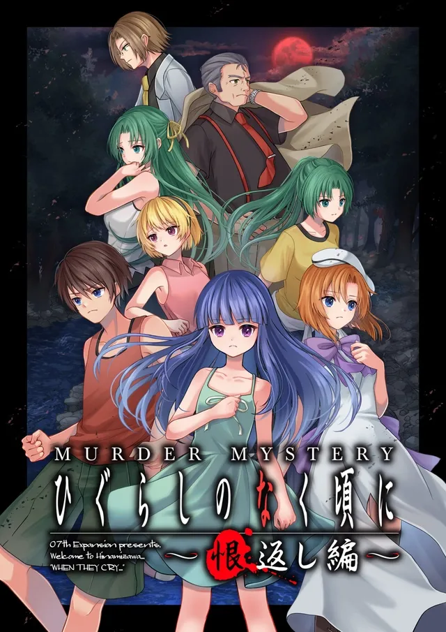
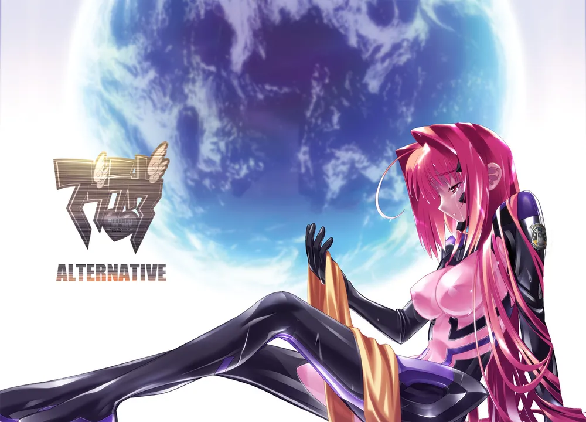
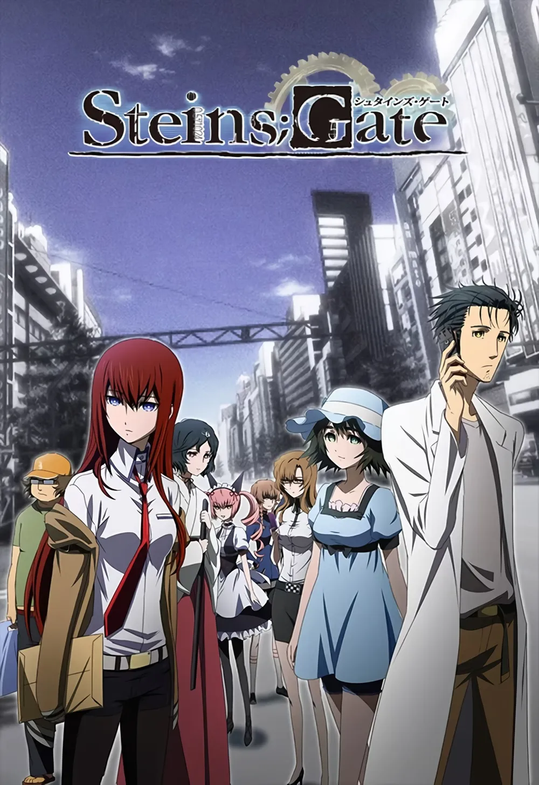

1. 『쓰르라미 울 적에』
(2002~)
공동 추리와 환경의 작품화
- 완성된 이야기를 전달받는 것을 넘어, 인터넷 게시판에서 증거와 해석을 교환함.
[제작자 류키시07]
"독자들이 함께 토론하고 추리하는 환경 자체가 작품 경험의 일부로 작동했다."

2. 『마브러브』 시리즈
(2003, 2006)
일상의 애착을 위기로 전환
- 평화로운 학원물의 애착을 극단적인 전쟁 상황과 선택의 무게로 잔혹하게 연결함.
[장르적 계승]
인물을 극한으로 몰아붙이는 서사는 후일 『진격의 거인』 창작에 직접적 영향을 미침.

3. 『슈타인즈 게이트』
(2009)
SF와 인물별 서사의 융합
- 오타쿠 문화, 시간에 관한 치밀한 SF, 관계의 선택을 결합하여 서사적 완성도의 정점을 보여줌.